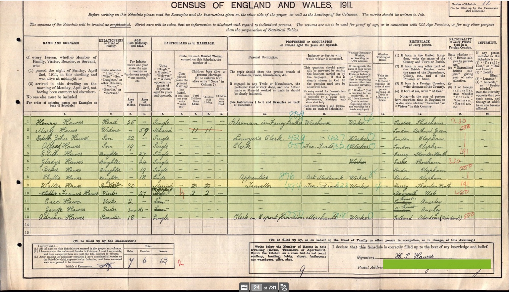
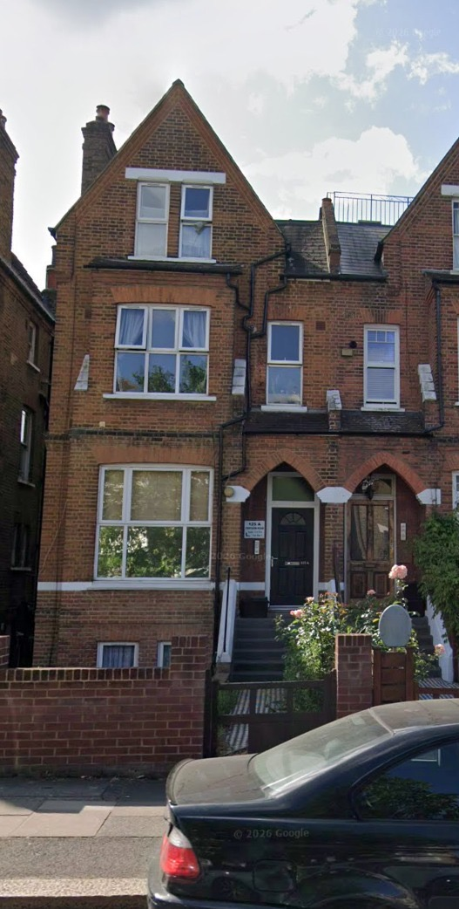

1911 census: 125a Croydon Road, Anerley
Transcript supplied by Antony Greenfield on 8 November 2026. Original census image and a modern house photograph subsequently supplied by the family. Address transcribed as “125a Croydon Road, Anerley S E”; civil parish Penge, Surrey; registration district number 39; sub-registration district Penge; enumeration district 13; piece 3417. The series is RG14 for the 1911 England and Wales census; schedule number has not been supplied.
Original census return

The original is preserved as supplied, including annotations, corrections and the green overlay concealing the postal address. Click to inspect at full size. The address above comes from the supplied index transcript.
Household as supplied
| Name | Age | Relationship/status field as supplied |
|---|---|---|
| Henry Hawes | 25 | Head |
| Mary Hawes | 59 | Widow |
| John Hawes | 22 | Son |
| Alfred Hawes | 19 | Son |
| Edith Hawes | 27 | Daughter |
| Gladys Hawes | 24 | Daughter |
| Bessie Hawes | 19 | Daughter |
| Phyllis Hawes | 18 | Daughter |
| Walter Hawes | 30 | Visitor |
| Frances Hawes | 27 | Visitor |
| Eric Hawes | 2 | Visitor |
| George Hawes | 3/12 | Visitor |
| Adrian Hawes | 18 | Boarder |
“Widow” is Mary’s marital status rather than a relationship to head. It is reproduced in the supplied column without assuming a missing relationship. The original schedule also contains Son/Daughter entries alongside a head aged 25; this inconsistency remains unresolved and no relationships have been silently rewritten.
Walter’s individual entry
- Male, married, aged 30
- Birthplace: Thornton Heath, Surrey, England
- Relationship: visitor
- Occupation: Traveller
- Indexed estimated birth year: about 1881
Additional readings from the original image
- Frances: aged 27, born “Monmouth, Usk” (Usk, Monmouthshire). Her entry appears to state four completed years of marriage, two children born alive and two living, with none recorded as having died.
- Walter: occupation “Traveller”, with industry “Tea Trade”; worker. This adds the trade missing from the index transcript.
- Mary: birthplace “London, Bethnal Green”. The return contains conflicting entries: “Widow” is written in the relationship column, while “Married” appears in the marital-status column. The children figures appear to read 11 and 11, but are struck through. They are clues for further research, not a verified count of her children.
- Other birthplaces: Henry and Gladys are recorded at Shoreham, Sussex; John, Alfred, Bessie and Phyllis at Clapham, London; Edith at Thornton Heath, Surrey; Eric and George at Anerley, Kent. Adrian’s birthplace reads Aberdeen, Scotland, with “Resident” added.
- House: nine rooms are entered. The signature appears to read “H. L. Hawes”.
The supplied transcript is preserved above. Although some Son/Daughter relationships seem inconsistent with Henry as the head aged 25, the original does contain those entries; they have not been reinterpreted as established sibling relationships.
House photograph

Research implications
The visitor group of Walter, Frances, Eric and infant George is consistent with the known family. George’s age of three months is compatible with the 27 December 1910 date appearing in the supplied 1939 Register extract and his first-quarter 1911 birth registration. Eric’s age of two is compatible with 14 February 1909. Walter’s Traveller occupation supplies an earlier employment description alongside the later pension-card occupation Salesman & Staff Trainer, The original schedule specifies the tea trade, but does not name his employer.
Walter’s recorded age implies a birth approximately in 1880–1881 and does not exactly match the existing c.1879 family-tree date. Both are retained pending corroboration. Visiting this address does not establish it as the visitors’ normal home.
Mary aged 59 could be relevant to the Mary Ellis/Mrs Wilson Hawes research, and other household members may be Walter’s relatives, but this extract alone does not establish those identities or sibling relationships. The Gladys here, aged 24 in 1911, cannot be Walter’s daughter Gladys Madeline, whose birth was registered in 1913. Adrian is recorded as a boarder, not assigned a family relationship.
Evidence status: original census image, family-supplied index transcript and modern house screenshot. Schedule number and unresolved relationship entries still require checking. The obscured address has not been reconstructed.